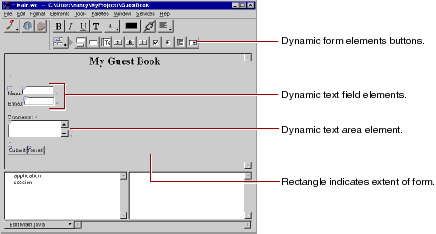

Table of Contents
Table of Contents  Previous Section
Previous Section
WebObjects Builder adds a form element to your component. The triangle at the upper-left corner indicates that it is a dynamic form, as opposed to a static form.The gray border indicates the extent of the form. You can increase its size by adding additional elements inside it.
This text replaces the word "Form" that was displayed by default.
You have just entered three lines (and a blank line) of static text inside the form. Now you'll enter some dynamic elements to receive input from the user: two text fields and a multi-line text area.
 to create a dynamic text field element (WOTextField).
to create a dynamic text field element (WOTextField).
The window should now look like this:

 Next Section
Next Section